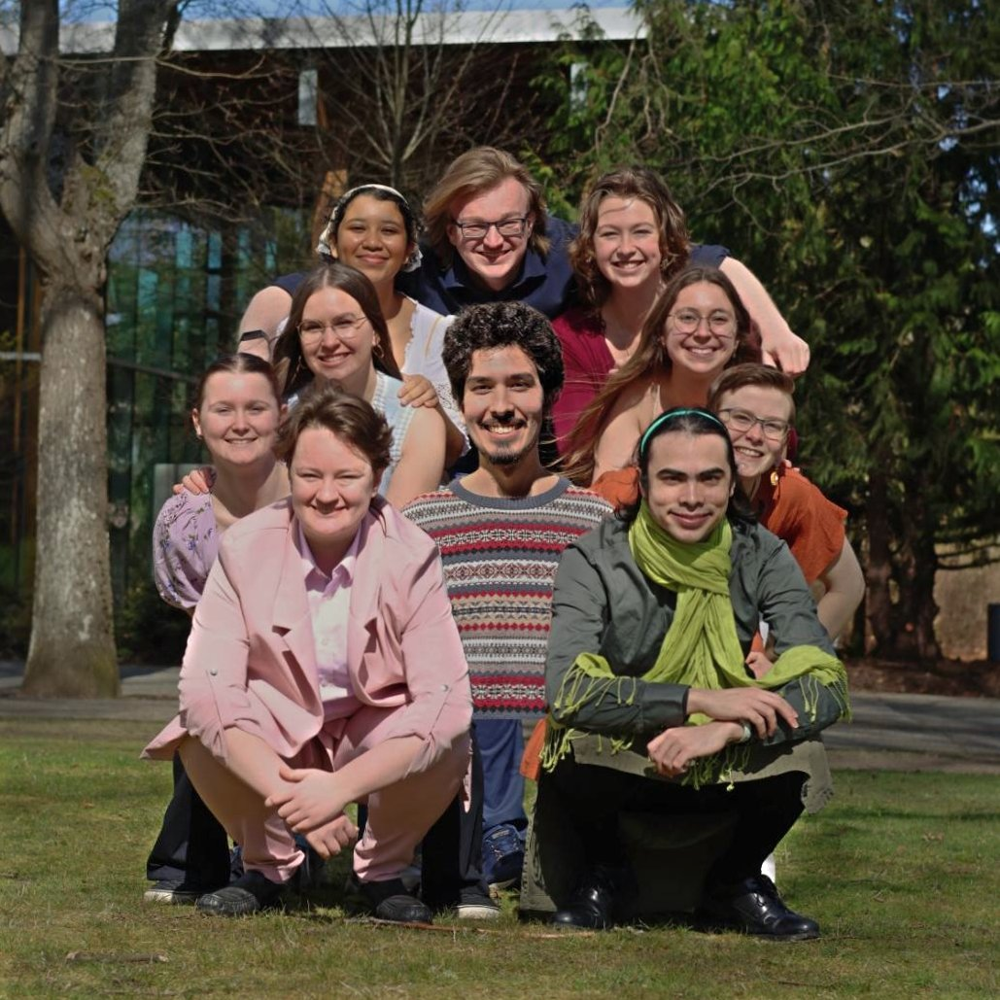
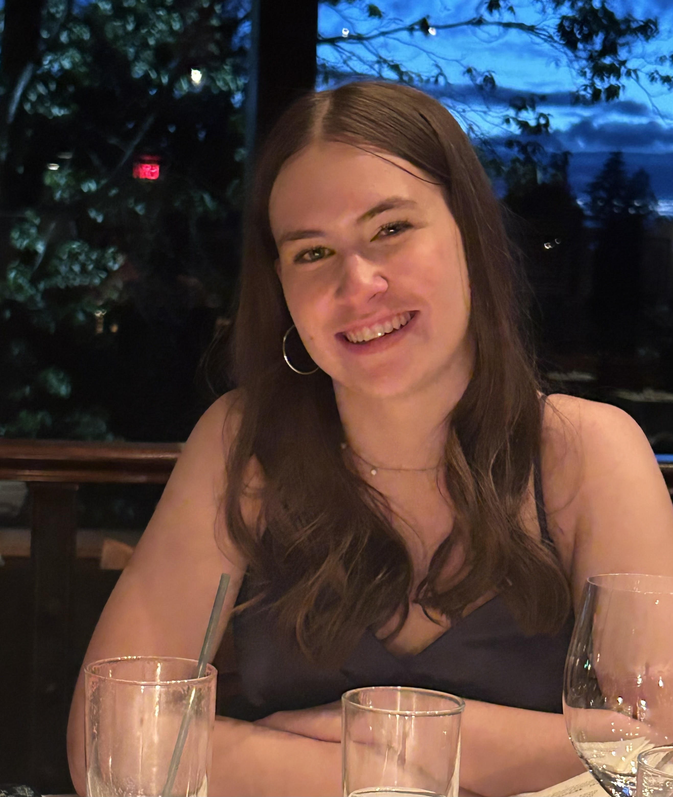
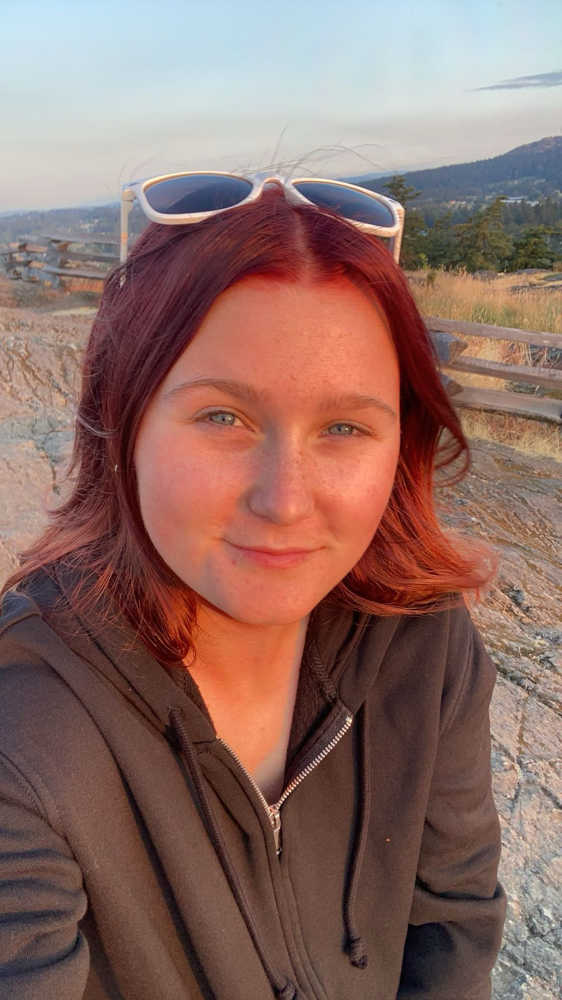

Executive Team

President - Ixmar Nava (he/him)
Hey friends, I’m Ixmar, a 5th year psychology student. When I joined this club last year I had no dance experience, but I have always loved being able to dance and make up moves to whatever song is playing. This club has not only been welcoming but an extraordinary environment to meet new people that all want a bit of fun and dance. Learning so many styles has made these classes some of the days I look forward to the most, whether it’s to spend time with new friends or learn another move to bust out on a whim. Come give it a try! Worse comes to worst, you love it so much you don’t want to stop dancing!
Co-Vice President/Communications Manager - Rachel Oleksyn (she/her)

Hi! I'm Rachel and I am a 3rd year psychology student. I joined this club in my 1st year and recently joined the exec team last year and have been loving it ever since! Dancing has always been a passion of mine. Before joining this club, I trained and competed in many different styles of dance such as Tap, hip hop, jazz and more! This club has allowed me to push myself, try new things, learn new skills, make friends, and amazing memories. I can"t wait to meet you all and get dancing!
Co-Vice President/Events Coordinator - Carissa Dye (she/her)

Hi I’m Carissa! I’m in my third year at UVIC studying French, Communications and Business and will be serving my second term on this exec team! I’ve been dancing since my first year and am so excited to get to know you all :)
Treasurer - Kaelyn Grozic (she/her)
Hi, I'm Kaelyn! I'm a third year UVic student studying Biology and French. I tried social dancing for the very first time a year ago at this club, and in spite of having two left feet I always manage to have lots of fun. I also have yet to break anyone else's feet, yay! If you also love having a good time and making friends, social dance might just be the perfect hobby.
Secretary - Silke Staffeldt-Jost (she/her)
Hello! My name is Silke and I am a fourth year sociology and writing major. Before joining, I'd never tried partner dancing. This never stopped me from grooving, though! Social dancing and learning new styles has quickly become a passion of mine and I am so thankful I tried it out. I've learnt so much through the UVic Ballroom, Latin, and Swing Club and met such amazing people. If you try something new, you might just discover a new passion!
Equipment Manager - Brendan Boyd (he/him)
Hi my name is Brendan. I am a big musical theater person, which is where I met the people that dragged me out to ballroom dance when I lived in Langley. I've been dancing ballroom on and off since 2019, and was hooked straight away. I’m at UVIC as a 2nd year in the Bachelors of Education program after deciding the life of an aircraft mechanic wasn't for me. I do hope that I can spread the same joy that I received to everyone else who gives dance a shot.
Grand Members at Large - vacant
We are always looking for more folks to join as Grand Members at Large!
Email ballroom@uvicdance.com if you are interested in this position.
The UVic Ballroom, Latin, and Swing Club is run by a group of volunteer students. They hire professional instructors to teach classes, they plan events and workshops. If you are interested in joining the executive and helping run the club, please talk to one of the executives or email us at ballroom@uvicdance.com!